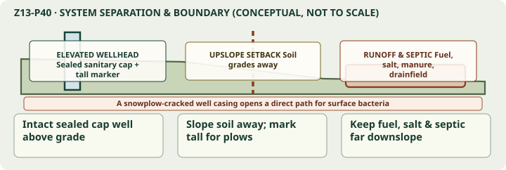

Z13-P40 · Home survival and utilities · New manuscript
Protect private wellheads from snowmelt, runoff, fuel, and septic drainage
Prevent surface water, fertilizers, animal waste, and spilled fuel from entering groundwater aquifers through damaged well caps or casings.
When it applies · Rural homes, farms, and cabins with private drinking wells across all seasons.
Equipment · Visual inspection log, intact vermin-proof sanitary well cap, positive ground grading, and licensed well contractor contact.

Actions
- Inspect the exterior well casing each spring and autumn: confirm the casing rises cleanly above ground grade (avoiding submerged pit installations), the sanitary well cap is tightly bolted and vermin-proof with intact conduit seals, and surrounding soil slopes AWAY from the wellhead.[U05, U06]
- Keep gasoline, heating oil, pesticides, road salt, animal manure, septic drainfields, and livestock pens far downslope and well outside state-mandated setback distances from the wellhead.[U05, U06]
- Mark the well casing visibly with a tall flexible fiberglass stake before Minnesota snowfall so snowplows and mowers NEVER shear the casing—an impact crack opens a direct highway for surface bacteria into drinking water.[U06, ED]
Failure recognition · Backing a snowplow into a snow-buried well casing and leaving a cracked cap exposed to spring snowmelt runoff.[U06, U05]
Verify · Confirm unbroken sanitary cap, soil sloping away from casing, tall winter plow marker installed, and chemical/fuel storage far away.[U05, U06]
Stop or change course · Cracked casing, loose cap, standing snowmelt pooling against the pipe, or chemical spill nearby requires switching to bottled water and calling a licensed well contractor.[U06, W18]
Evidence and editorial notes
- U05 · US EPA · Private Drinking Water Wells (current web edition)
- Section: Private Drinking Water Wells > Maintenance, Floods, and Testing · Conditions: Households relying on private domestic groundwater wells
Support: Private wells are not regulated by municipal utilities; test water annually (and after any flood, power loss with pressure drop, or plumbing repair) through a certified laboratory and keep wellheads sealed above grade away from runoff and chemicals.
Limitations: Visual clarity or normal taste never proves a private well is free of bacteria, nitrates, or arsenic. · Conflicting evidence: None; aligns with CDC-WELL (W18) and MDH-WELL-HOME.
Editorial note: Core private-well governance and testing cadence in Z13. · Specialist reviewer: Hydrogeology, licensed well contractor, and public health
Primary source · checked 2026-11-24 - U06 · Minnesota Dept. of Health · Wells and Borings Safety (current web edition)
- Section: Wells and Borings > Minnesota Private Well Standards and Disinfection · Conditions: Minnesota and Upper Midwest private residential wells
Support: Use a licensed Minnesota well contractor for wellhead repair, electrical pump work, or shock disinfection after flooding or backflow; maintain sanitary well caps and isolate well casings from surface snowmelt and agricultural runoff.
Limitations: DIY well-cap removal or improper chlorine mixing risks aquifer contamination and electrical shock. · Conflicting evidence: None; regionalizes EPA-WELL for Minnesota conditions.
Editorial note: Anchors Upper Midwest private-well resilience and licensed-trade handoff. · Specialist reviewer: Minnesota environmental health and licensed well trades
Primary source · checked 2026-11-24 - W18 · CDC · What to Do With Your Private Well After a Flood (current web edition)
- Section: How to Disinfect Wells After an Emergency > Safety precautions and before returning to use · Conditions: Private drinking water wells submerged or impacted by floodwater
Support: Do not drink flood-impacted well water; rely on bottled or verified safe water, watch for fuel/chemical spills, and use qualified well contractors for inspection, electrical safety, and disinfection.
Limitations: Well shock-chlorination is unsafe to improvise around damaged electrical equipment or chemical releases. · Conflicting evidence: None; aligns with EPA private-well guidance.
Editorial note: Prevents DIY well repair or consumption before testing confirms safety. · Specialist reviewer: Drinking-water utility and environmental health
Primary source · checked 2026-11-24
Source lineage · US EPA Private Wells and MN Dept. of Health Wells; new manuscript · Classification · New manuscript.